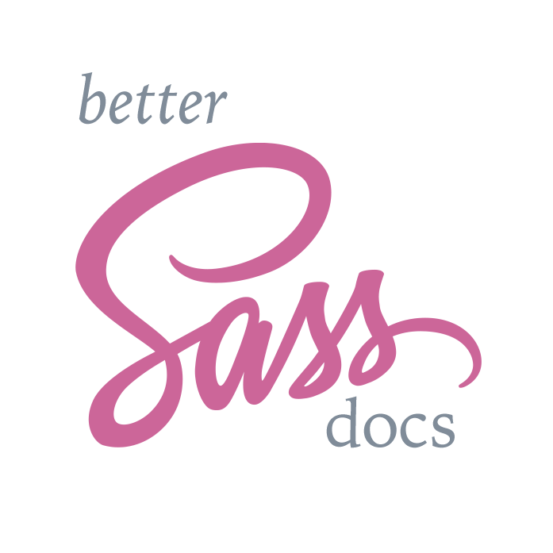

Sass Reference

Sass is an extension of CSS that adds power and elegance to the basic language. It allows you to use variables, nested rules, mixins, inline imports, and more, all with a fully CSS-compatible syntax. Sass helps keep large stylesheets well-organized, and get small stylesheets up and running quickly.